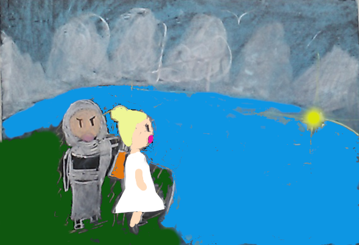

目次
オリオン座の紹介 オリオンと天に現れた大きなサソリオリオンと月の女神
オリオン座の紹介
オリオン座は2個の一等星と5個の二等星をもつ星座で、豊明市内でも簡単に確認できます。
神話ではオリオンはとても勇敢な狩人であると伝わっています。
オリオン座の絵をみると自分が退治したライオンの毛皮を盾に 棍棒を振り上げる勇敢な狩人の姿になっています
オリオンと天に現れた大きなサソリ
向かうところ敵なしのオリオンは得意になってこう言いました：「俺は世界一の狩人だ!!神様だろうがと猛獣だろうが俺にはかなわない」
この話は女神ヘラの耳にも入りました。
女神ヘラはギリシア神話で一番偉い神様(ゼウス)の奥さんです。
オリオンの話を聞いて不愉快な気分になりました。
ヘラは早速、オリオンに嫌がらせしてやろうと考えました。
最初に、オリオンの靴の中に一匹のサソリを押し込みました(危ないので良い子はマネしないでね)
サソリが隠れているとも知らず、オリオンは靴を履こうとしました・・・が何かゴソゴソするので靴を見てみると中にはサソリが・・・
「うわー!!、誰だ俺の靴にサソリ入れたやつは・・・近所の悪ガキか」(いえ、神様ですけど・・・)
こう言うとオリオンはサソリを捨てて靴を履きました。
嫌がらせに失敗した女神ヘラは、次の手を考えました。
それは夏の夜にある化け物が出るようにして、オリオンを脅かそうと言うものです。
ある夜、女神ヘラはオリオンに言いました。
ヘラ：「あなたが最強なら、冬の明け方ごろ東の空に出てくる化け物を退治してちょうだい」
オリオン：「何でも退治してやるぜ、俺は最強の狩人だからな!!」
そこに現れたのは・・・天を覆うほどの大サソリ!!
さすがのオリオンもあまりの怖さでひっくり返りました。
「見たか!!オリオンこれが神の力よ」
女神ヘラは得意げにこう言いました(・・・なんかおとなげないような・・・)
しかし・・・オリオンにはもう一つの才能がありました。海を歩いて渡れるのです。
なぜって・・・オリオンは海の神様ポセイドンの子供だからです。
こうなると大サソリも追いかけられません。
それ以来、オリオンは大サソリが出る時期に海へ逃げるようになったそうです。
豊明市内で撮影したさそり座(2/11 午前5時ごろ)

オリオンと月の女神
海を歩いてサソリから逃げたオリオンはその後、アポロン(光の神)とアルテミス(月の女神)の兄妹に会いました。アルテミスは狩りの女神、オリオンは「最強」の狩人なので、この２人はとても話が合いました・・・。
しかし・・・アポロンは・・・置いてきぼりにされてスネていました(光の神様に闇の心がめばえました)。
置いてきぼりにされたアポロンはなんとかして妹のアルテミスとオリオンを引き離そうと考えました。
そうしているうちに、オリオンは早朝に一人で海を歩いて狩りに出かけました。
「アルテミスが寝ているうちに大きな獲物をプレゼントしておどろかしてやる」
これを見つけたアポロンは心の中でこう思いました
「はっはっは!! 獲物になるのはお前だ!! オリオン」
・・・光の神様が闇の心に覆われた瞬間でした。
アポロンはアルテミスをたたき起こして、海を歩くオリオンに光を当ててこう言いました。
光を当てられたオリオンはまぶしさのあまり陸上を這う光の塊のようにしか見えなくなりました。

アポロン：「アルテミス、あの光の塊をつかまえられるかな？狩の女神だから簡単だよね？」
アルテミス：「あの光が何かわからないけど・・・」
アポロン：「狩の女神は狙った獲物は外さないんだよアルテミス・・・」
アルテミス：「いや、別に狙ってないし・・・でもつかまえればいいんでしょ？」
兄が言うのをめんどくさいと思いながらも、仕方なしにアルテミスは弓で光の塊に向けて矢を放ちました。
アポロン：「ハズレ、ハズレ、狩の女神様が獲物を逃したとみんなに言ってやろう!!」
アルテミス：「もう・・・めんどくさい!!」
アルテミスはもう一度、弓で光の塊に向けて矢を放ちました。

矢は光の塊=オリオンに命中してしまいました。
オリオンに刺さっていた矢が自分のものだと知ったアルテミスは悲しみのあまり、
家から出なくなってしまいました。
そして、月明かりはなくなりました。
困ったゼウスはアルテミスをなぐさめるため、オリオンを天にあげて、星座にしました。
全天で最も美しく、月の通り道近くにある星座として・・・。
師崎にて撮影したオリオン座と冬の大三角